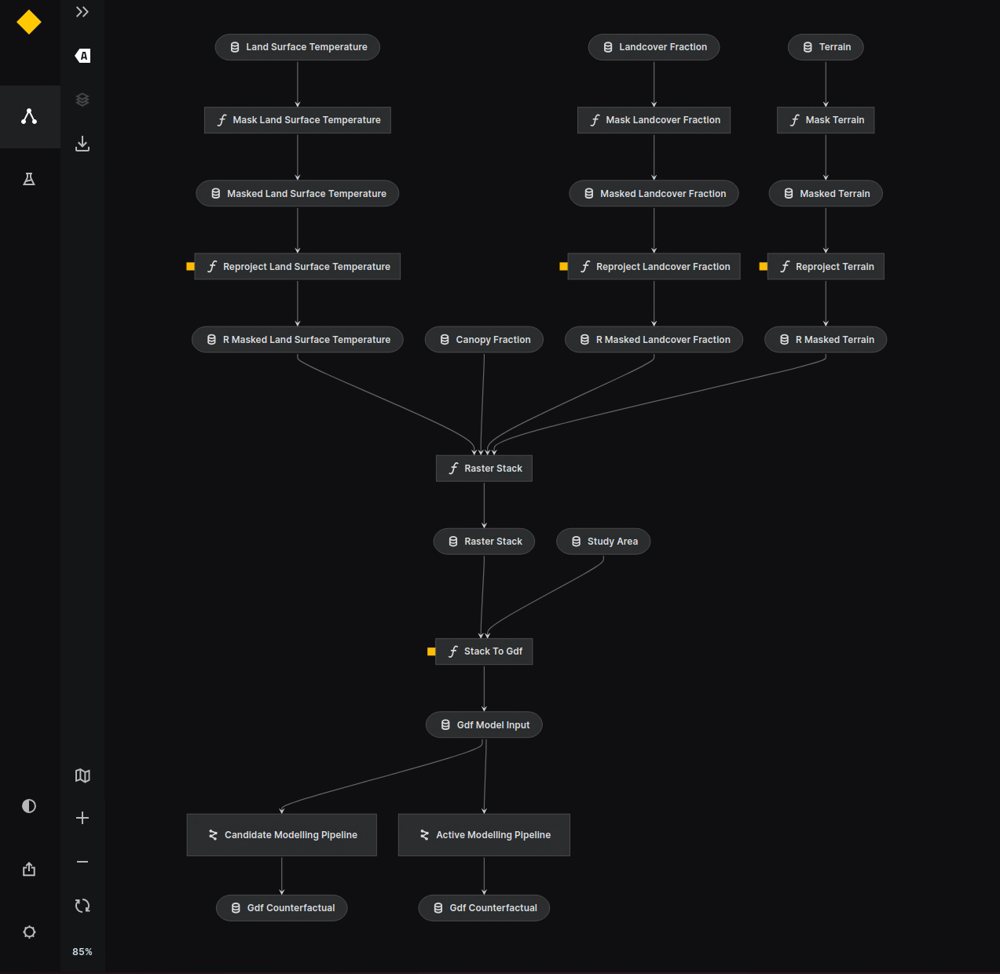

Task 5 | Local Climate Regulation¶

This repository provides a workflow for analyzing the impact of urban trees on local climate regulation. This workflow is an adapted version of the methodolgy described in Venter et al. (2020).
Code is provided for the following tasks:
Extract Data a. extract raster data from GEE:
extract_raster_data.jsb. extract climate data from MET Norway API FROST: jupyter notebookRaster Processing
kedro pipeline:
raster_processingload single GeoTIFFs into a rasterstack
convert a raster stack to a GeoDataFrame, where each band becomes a colum, and each pixel value is a row.
Land Surface Temperature (LST) counterfactual modelling
kedro pipeline:
lst_counterfactualcalculate the LST counterfactual for each pixel in the study area
Ecosystem service calculation
kedro pipeline:
ecosystem_servicescalculate the ecosystem services per district
Complete documentation is hosted on GitHub Pages: Urban Climate Documentation
Getting Started¶
This project utilizes the Kedro Framework to streamline data processing and analysis. See the documentation for detailed step by step instricutions on how to set up the project and run the project.
Environment set up
Docker
The project uses gdal, which can be hard to install. A Dockerfile is provided that uses a gdal image, so that he project can be run in a container. Documentation on how to build and run the Docker image for this project can be found here.
# Build container from Dockerfile docker build -t <image-name>:<image-tag> .
Note that the containter contains no data, so please ensure to mount your data into the container (see
template_devcontainer.json).
Virtual Environement (.venv)
If you have gdal bindings installed on your pc, you can also run the project in a virtual environment. A virtual environment can be set up using the following commands:
# Create a virtual environment python3 -m venv .venv # Activate the virtual environment source .venv/bin/activate # Install the requirements pip install -r requirements.txt
Kedro | run the pipelines
The project contains three Kedro pipelines:
raster_processing: loads and processes the input data
lst_counterfactual: runs the LST counterfactual modelling
ecosystem_services: calculates the ecosystem services
The pipelines can be run using the following commands:
# Enter the container docker run -v /host/directory:/container/directory:cached <image-id> kedro run --pipeline=<pipeline-name>
# Kedro commands kedro run --pipeline=raster_processing kedro run --pipeline=lst_counterfactual kedro run --pipeline=ecosystem_services
The pipelines can also be run in sequence using the following command:
kedro run
** Kedro | visualize the workflow**
The workflow can be visualized using the Kedro Viz tool. This tool can be accessed by running
kedro vizin the terminal.
Input Data¶
The following table provides an overview of the input data used in this project.
Dataset |
Norwegian Name |
Type |
Date |
Description |
Source |
Download link |
|---|---|---|---|---|---|---|
Tree crowns |
Trekrone |
Vector - FileGDB feature |
|
Tree crowns detected using ALS data following the workflow outlined in Hanssen et al. (2021) and Github repository urban-treeDetection. |
NINA |
download here |
Population statistics |
Befolkningsstatistikk på grunnkretser 2021 |
Vector - FileGDB feature |
|
National dataset of population numbers, startified by age at neighbourhood level (grunnkrets). |
Norwegian Mapping Authority, 2020 |
|
Land cover |
Arealdekke |
Raster |
2021 |
WorldCover 10 m 2021. Global land cover map for 2021 at 10 m resolution based on Sentinel-1 and Sentinel-2 data. |
ESA |
|
Terrain model |
Terrengmodell |
Raster |
2020 |
Ditigital Terrain Model 10 m (DTM 10) |
Geonorge |
|
Land Surface Temperature |
Overflatetemperatur |
Raster |
2020 |
Land Surface Temperature from Landsat 8 following the workflow outlined in Ermida et al 2020. |
Methods¶
Data Preparation¶
Land Surface Temperature (LST): (i) Import Landsat 8 LST data, (ii) calculate maximum composite and resample to 100m (original resolution) and, (iii) export to LST GeoTiff
%municipality%_lst_100m.tif.Land cover: (i) Import World Cover image, (ii) calculate fraction of cropland, grass/shrub, built-up and water surfaces within the 100m grid of the LST data and, (iii) export to land cover fraction GeoTiff
%municipality%_lcf_100m.tif.Terrain model: (i) Import national 10m terrain model, (ii) calculate average elevation within the 100m grid of the LST data and, (iii) export to average elevation GeoTiff
%municipality%_avg_dtm_100m.tif.Tree crown polygons: (i) import FileGDB feature to GeoPandas, (ii) rasterize tree crowns, (iii) calculate fraction of the tree canopy within the 100m grid and, (iv) export to tree canopy fraction GeoTiff
%municipality%_tcf_100m.tifNeighbourhood polygons with population statistics: (i) Import FileGDB feature to GeoPandas, (ii) calculate the attribute
pop_elderly, which is the sum of the population > 75 years old (iii) and calculate the attributecount_treesby counting the number of tree crowns within each neighbourhood polygon (spatial-join).
Data Analysis¶
Land Surface Temperature counterfactual modelling Estimate the effect of tree crown coverage on land surface temperature (LST) using counterfactual modelling. Here a no-tree scenario is simulated by setting the tree crown coverage to zero.
Train the counterfactual model:
Import the 100x100 m raster data. (LST, land cover fractions, averaged dtm, tree canopy fraction).
Stack the raster data and convert it to a pandas dataframe. With rows presenting the 100x100 m grid cells and columns presenting the different features.
Train a random forest regressor on the dataframe with the form:
LST = f(elevation, fraction_tree_canopy, fraction_built_up, fraction_grass_shrub, fraction_water, fraction_cropland)
Predict the counterfactual outcome:
Create a copy of the dataframe and set the fractionTreeCanopy to zero.
Predict LST for the no-tree scenario (fractionTreeCanopy = 0) using the trained model.
Calculate the effect of tree crown coverage on LST:
Calculate the difference between the observed LST and the predicted LST for the no-tree scenario.
Generate Map Products:
Map of the observed LST
Map of the counterfactual LST (no-tree scenario)
Map of the effect of tree crown coverage on LST (observed LST - counterfactual LST)
Note
What is counterfactual modelling?
Counterfactual modelling is a method to estimate the effect of a parameter (e.g. canopy cover) by comparing the observed outcome (e.g. LST) with a counterfactual outcome (e.g. LST without canopy cover). The counterfactual outcome is estimated by a model that predicts the outcome based on a set of features. In this case, the counterfactual outcome is estimated by a random forest model that predicts LST based on elevation, land cover fractions and tree canopy fraction. The effect of tree crown coverage on LST is then calculated as the difference between the observed LST and the counterfactual LST.
Ecosystem service calculation Calculate the climate service of trees in terms of avoided heat risk persons. The avoided heat risk persons are calculated as the difference between the observed heat risk persons and the counterfactual heat risk persons (no-tree scenario). Heat risk is defined as the number of persons > 75 years old living in neighbourhoods with LST > 30°C.
Calculate the heat risk persons:
Import the neighbourhood polygons with population and tree statistics (see Data Preparation) into a geopandas dataframe.
Import the LST and counterfactul LST rasters and mask out pixels with LST < 30°C.
Add the following attributes to the neighbourhoods gpd dataframe.
area_lst30_normal: area of neighbourhood polygon covered by LST > 30°C (non-masked pixels)area_lst30_counterfac: area of neighbourhood polygon covered by counterfactual LST > 30°Cfraction_lst30_normal: fraction of neighbourhood polygon covered by LST > 30°Cfraction_lst30_counterfac: fraction of neighbourhood polygon covered by counterfactual LST > 30°C
Calculate the number of heat risk persons per neighbourhood using the formula:
hr_person = pop_elderly * fraction_lst30_normalCalculate the number of heat risk persons per neighbourhood in the counterfactual scenario using the formula:
hr_person_counterfac = pop_elderly * fraction_lst30_counterfacCalculate the additional heat risk persons per neighbourhood using the formula:
additional_hr_persons = hr_person - hr_person_counterfac
Calculate the climate service per neighbourhood:
calculate the additional heat risk persons per tree removed using the formula:
additional_hr_persons_per_tree_removed = ((pop_elderly * fraction_lst30_counterfac) - (pop_elderly * fraction_lst30_normal)) / count_trees)or
additional_hr_persons_per_tree_removed = additional_hr_persons / count_trees
Calculate the total climate service for the municipality:
Sum the additional heat risk persons per tree removed for all neighbourhoods.
Note that some neihgbourhoods have a null values, either there are no elderly living in the neighbourhood or the land surface temperature is below 30°C. These neighbourhoods are excluded from the calculation of the total climate service.
Generate Map Products:
Map of the observed heat risk persons per neighbourhood (interim)
Map of the counterfactual heat risk persons per neighbourhood (interim)
Map of the additional heat risk persons per neighbourhood per tree removed
References¶
Venter, Z.S., et al. (2020) Linking green infrastructure to urban heat and human health risk mitigation in Oslo, Norway. Science of The Total Environment, 709, 136193. https://doi.org/10.1016/j.scitotenv.2019.136193
Ermida, S.L., Soares, P., Mantas, V., Göttsche, F.-M., Trigo, I.F., 2020. Google Earth Engine open-source code for Land Surface Temperature estimation from the Landsat series. Remote Sensing, 12 (9), 1471; https://doi.org/10.3390/rs12091471
Contributors¶
Willeke A’Campo (NINA), willeke.acampo@nina.no
Zander Venter (NINA), zander.venter@nina.no